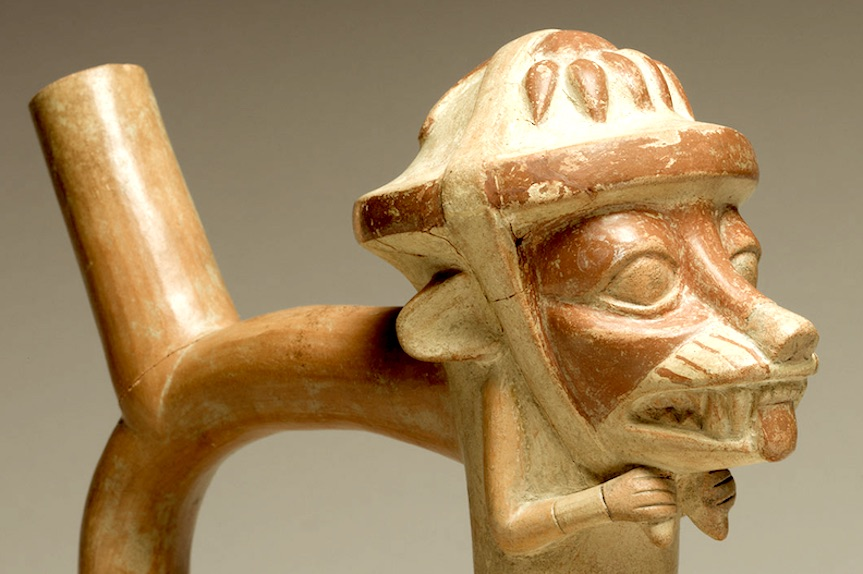
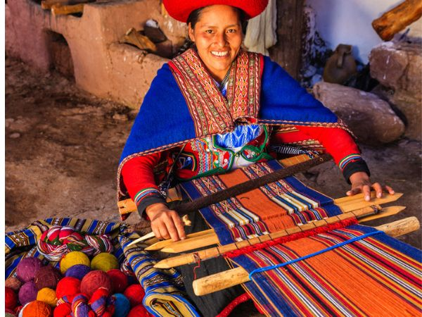
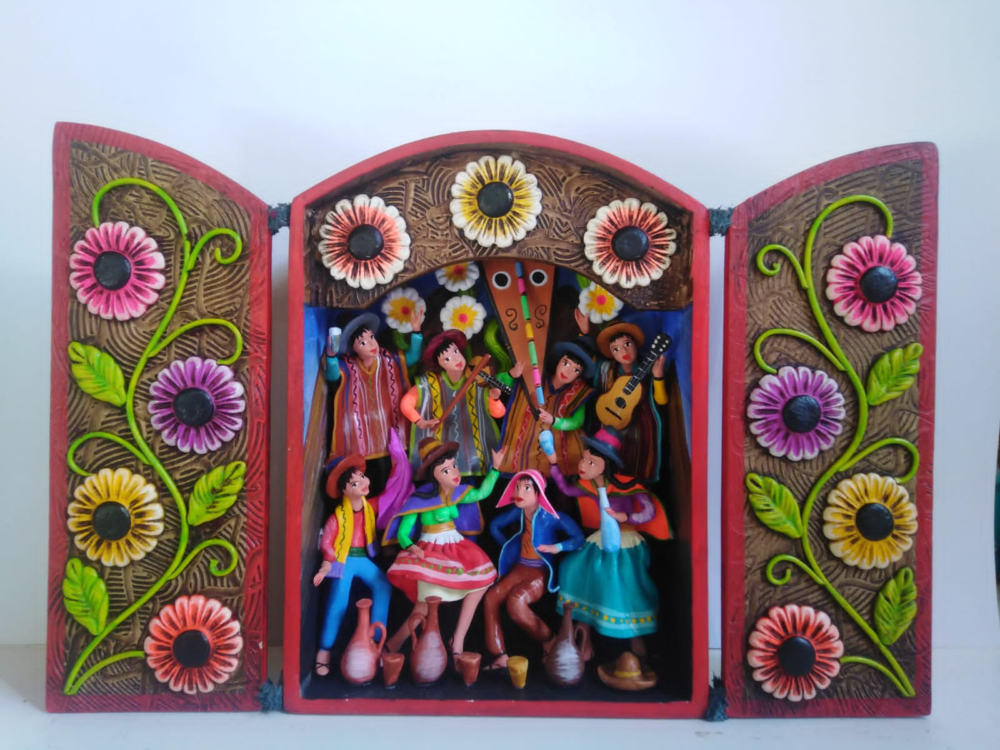

Trame del Perù
Arte Antica Precolombiana
L’arte peruviana ha radici profondissime, che risalgono a civiltà come Chavín, Moche, Nazca, Wari e Inca. Queste culture hanno lasciato opere straordinarie:
- ceramiche Moche(in foto) con scene di vita quotidiana e figure mitologiche
- tessuti Paracas, tra i più complessi del mondo antico
- geoglifi di Nazca, enormi disegni nel deserto visibili solo dall’alto
- sculture e architetture inca, come Sacsayhuamán e Machu Picchu

Tessitura Andina
La tessitura è una delle forme artistiche più importanti del Perù. Nelle Ande, le comunità utilizzano ancora telai tradizionali per creare:
- poncho
- polleras (gonne colorate)
- fajas (cinture decorate)
- tessuti cerimoniali

Retablos di Ayacucho
I retablos sono una delle forme d’arte più famose del Perù. Si tratta di piccole “scatole” di legno che contengono scene in miniatura:
- feste popolari
- danze
- animali
- scene religiose
- momenti della vita quotidiana
